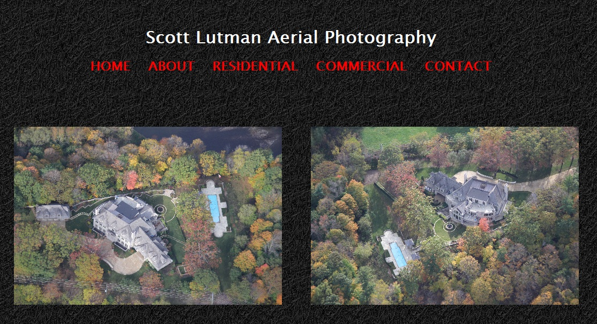
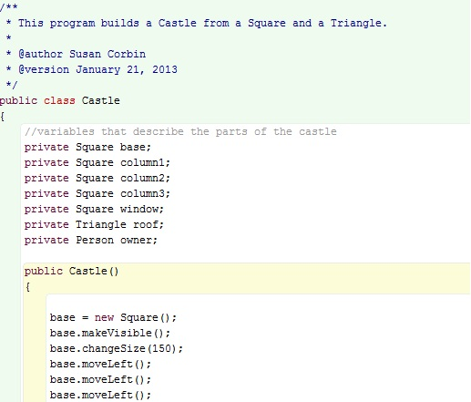
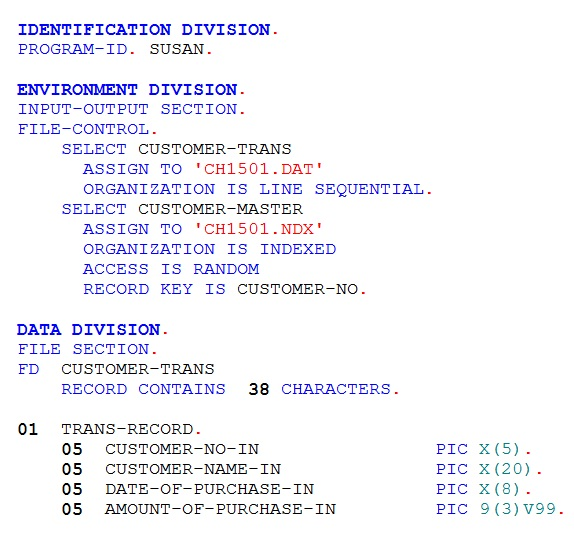

I have completed several websites for clients in the Toronto area. They range from aerial photographers to restaurants and even a culinary school. My work on these websites included copywriting and logo design.
 
With my training at Georgian College I would fit into an organization as an entry level mainframe programmer using my skills in COBOL and Java.